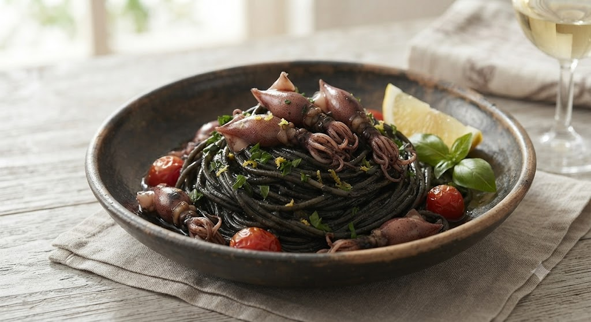

仙台・大町のマンションの一角。
階段を登り、扉を開ければ、そこはキャンドルが灯る大人の社交場。
オーナー自ら狩で入手したジビエや、東北の豊かな大地が育んだ食材。
その一つひとつが、シェフの繊細な技術によって
目にも鮮やかな芸術へと姿を変えます。

当店の看板メニュー「イカ墨のパスタ」。
濃厚な墨の旨みと、手打ちパスタの食感が絡み合う一皿は、
多くのお客様がこの味を求めて再訪されます。
ディナーで訪問。おしゃれな器で目でも楽しめて味も全て美味しく最高の時間でした。店内も静かで会話がしやすかったです。
去年のクリスマスに。ブランケットを手渡してくれる等小さな気遣いがとても好印象でした。コース料理のどれもが美味しくて満足以上でした。
・蔵王産カラスのロースとその背景
・青森産「嶽きみ」が持つ糖度の秘密
・シェフが選ぶ本日の一杯
「一品ずつのこだわりをもっと詳しく知りたい」というお客様の声から生まれました。
その日にご提供するお料理の背景を美しく綴ったオリジナルカードを各テーブルにご用意いたします。
※マンションの2階にございます。階段をご利用いただくため、お足元の不自由な方はご予約時にご相談ください。